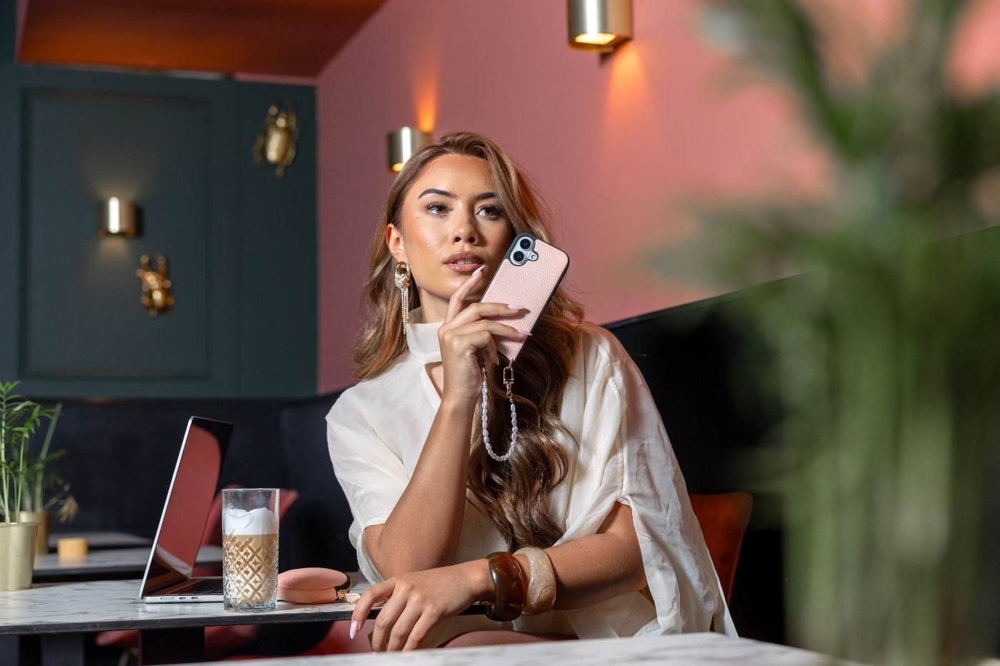
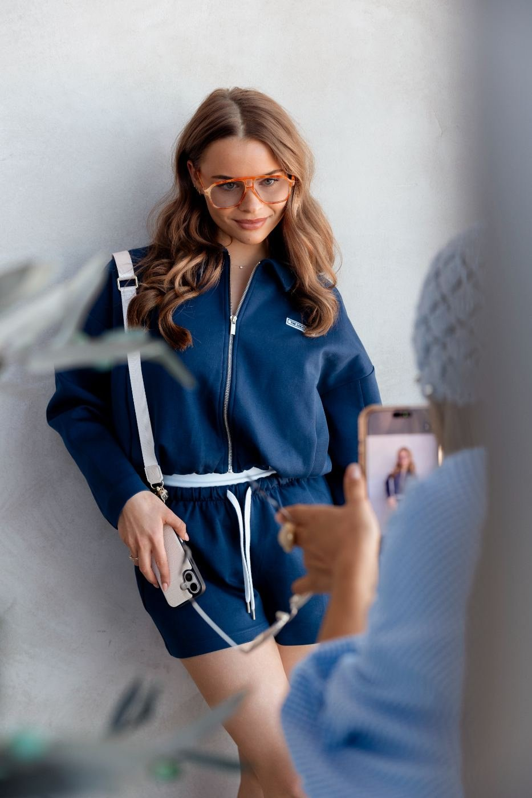
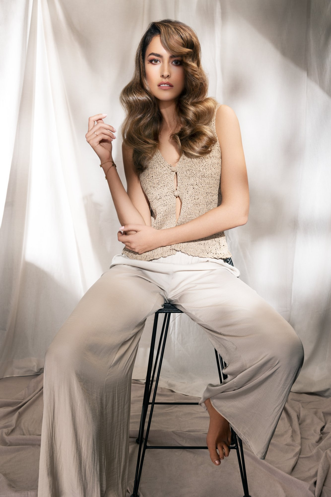
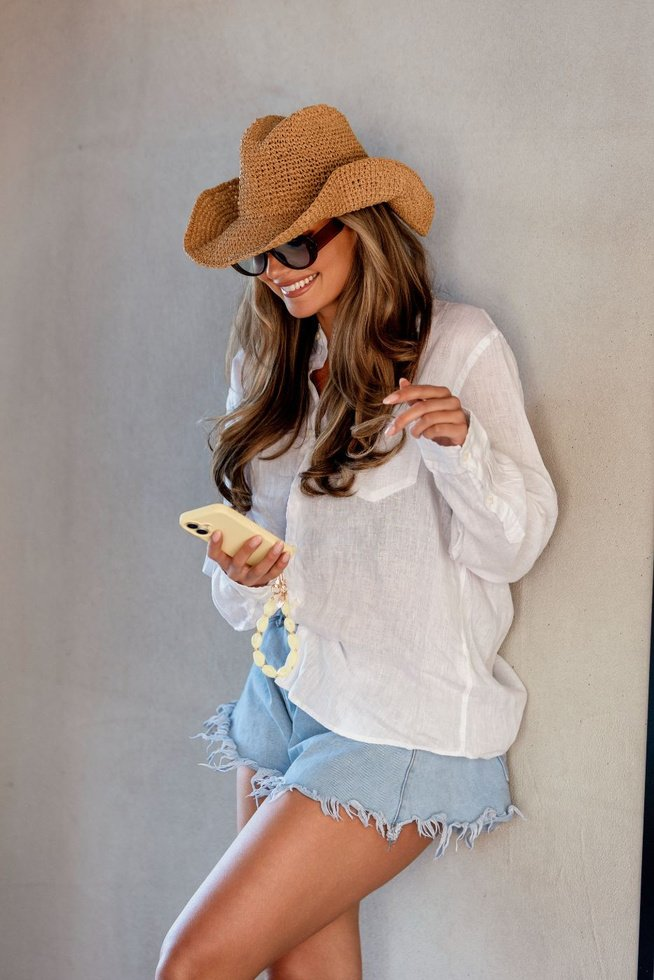
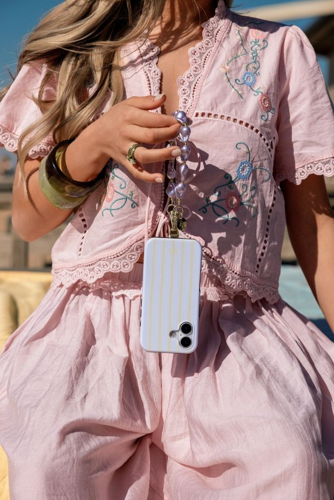
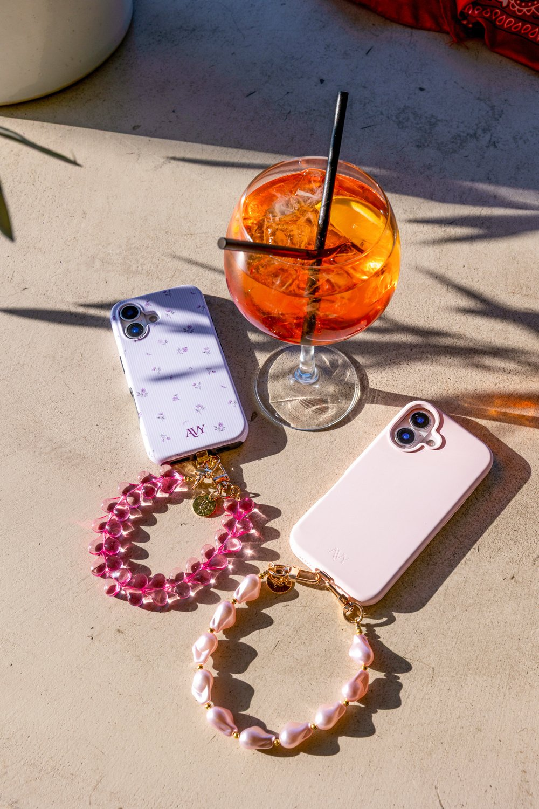
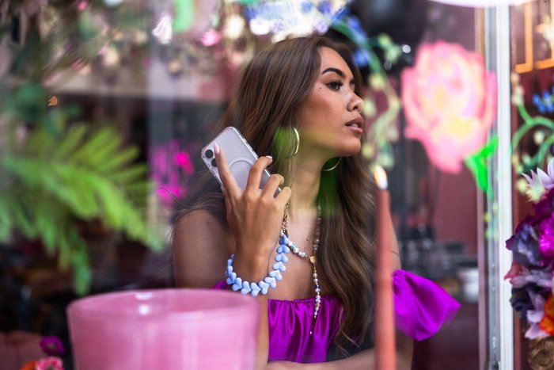
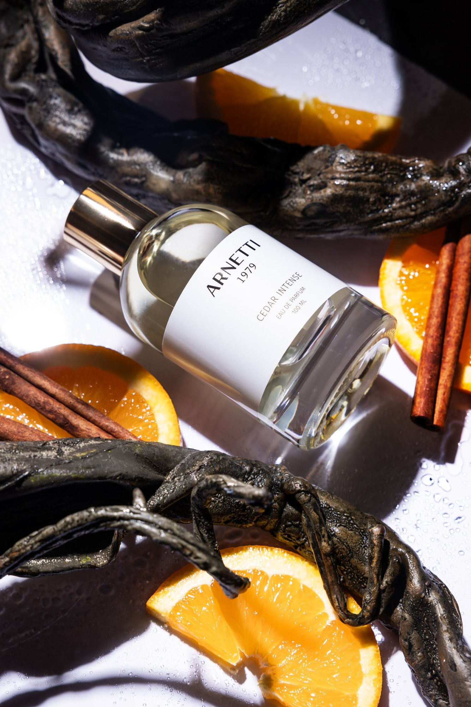

Videografie
Recent werk
Portfolio
Campagnes, editorials, reels en behind the scenes. Filter op type werk of op wie het maakte, Petra fotografeert, Dominique regelt de productie.
Video
Dominique van der Weide

Petra Holland & Dominique van der Weide

Petra Holland & Dominique van der Weide

Fashion editorial

Petra Holland & Dominique van der Weide
Casting & modellen

Petra Holland & Dominique van der Weide
Styling
Petra Holland & Dominique van der Weide
Op locatie
On location
Concept & organisatie

Petra Holland & Dominique van der Weide

Petra Holland & Dominique van der Weide
Behind the scenes
Behind the scenes

Petra Holland & Dominique van der Weide
Geen werk gevonden voor deze filter.